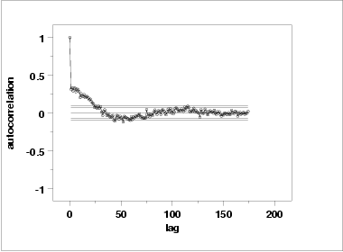

|
1.
Exploratory Data Analysis
1.4. EDA Case Studies 1.4.2. Case Studies 1.4.2.4. Josephson Junction Cryothermometry
|
|||
| Summary Statistics |
As a first step in the analysis, common summary statistics were
computed from the data.
Sample size = 700
Mean = 2898.562
Median = 2899.000
Minimum = 2895.000
Maximum = 2902.000
Range = 7.000
Stan. Dev. = 1.305
Because of the discrete nature of the data, we also compute
the normal PPCC.
Normal PPCC = 0.97484
|
||
| Location |
One way to quantify a change in location over time is to
fit a straight line
to the data using an index variable as the independent
variable in the regression. For our data, we assume
that data are in sequential run order and that the
data were collected at equally spaced time intervals. In our regression,
we use the index variable X = 1, 2, ..., N, where N is the number
of observations. If there is no significant drift in the location
over time, the slope parameter should be zero.
Coefficient Estimate Stan. Error t-Value
B0 2.898E+03 9.745E-02 29739.288
B1 1.071E-03 2.409e-04 4.445
Residual Standard Deviation = 1.288
Residual Degrees of Freedom = 698
The slope parameter, B1, has a
t value of 4.445 which is
statistically significant (the critical value is 1.96). However, the
value of the slope is 1.071E-03. Given that the slope is nearly zero,
the assumption of constant location is not seriously violated
even though it is statistically significant.
|
||
| Variation |
One simple way to detect a change in variation is with a
Bartlett test after dividing the
data set into several equal-sized intervals. However, the Bartlett
test is not robust for non-normality. Since the nature of the data
(a few distinct points repeated many times) makes the normality
assumption questionable,
we use the alternative Levene
test. In particular, we use the Levene test based on the median
rather the mean. The choice of the number of intervals is somewhat
arbitrary, although values of four or eight are reasonable. We will divide
our data into four intervals.
H0: σ12 = σ22 = σ32 = σ42
Ha: At least one σi2 is not equal to the others.
Test statistic: W = 1.43
Degrees of freedom: k - 1 = 3
Significance level: α = 0.05
Critical value: Fα,k-1,N-k = 2.618
Critical region: Reject H0 if W > 2.618
Since the Levene test statistic value of 1.43 is less than the
95 % critical value of 2.618, we conclude that the variances
are not significantly different in the four intervals.
|
||
| Randomness |
There are many ways in which data can be non-random. However,
most common forms of non-randomness can be detected with a
few simple tests. The lag plot in the
previous section is a simple graphical technique.
Another check is an autocorrelation plot that shows the autocorrelations for various lags. Confidence bands can be plotted at the 95 % and 99 % confidence levels. Points outside this band indicate statistically significant values (lag 0 is always 1).  The lag 1 autocorrelation, which is generally the one of most interest, is 0.31. The critical values at the 5 % level of significance are -0.087 and 0.087. This indicates that the lag 1 autocorrelation is statistically significant, so there is some evidence for non-randomness. A common test for randomness is the runs test.
H0: the sequence was produced in a random manner
Ha: the sequence was not produced in a random manner
Test statistic: Z = -13.4162
Significance level: α = 0.05
Critical value: Z1-α/2 = 1.96
Critical region: Reject H0 if |Z| > 1.96
The runs test indicates non-randomness.
Although the runs test and lag 1 autocorrelation indicate some mild non-randomness, it is not sufficient to reject the Yi = C + Ei model. At least part of the non-randomness can be explained by the discrete nature of the data. |
||
| Distributional Analysis |
Probability plots are a graphical test for assessing if a
particular distribution provides an adequate fit to a data
set.
A quantitative enhancement to the probability plot is the correlation coefficient of the points on the probability plot, or PPCC. For this data set the PPCC based on a normal distribution is 0.975. Since the PPCC is less than the critical value of 0.987 (this is a tabulated value), the normality assumption is rejected. Chi-square and Kolmogorov-Smirnov goodness-of-fit tests are alternative methods for assessing distributional adequacy. The Wilk-Shapiro and Anderson-Darling tests can be used to test for normality. The results of the Anderson-Darling test follow.
H0: the data are normally distributed
Ha: the data are not normally distributed
Adjusted test statistic: A2 = 16.858
Significance level: α = 0.05
Critical value: 0.787
Critical region: Reject H0 if A2 > 0.787
The Anderson-Darling test rejects the normality
assumption because the test statistic, 16.858, is greater than the
95 % critical value 0.787.
Although the data are not strictly normal, the violation of the normality assumption is not severe enough to conclude that the Yi = C + Ei model is unreasonable. At least part of the non-normality can be explained by the discrete nature of the data. |
||
| Outlier Analysis |
A test for outliers is the Grubbs
test.
H0: there are no outliers in the data
Ha: the maximum value is an outlier
Test statistic: G = 2.729201
Significance level: α = 0.05
Critical value for a one-tailed test: 3.950619
Critical region: Reject H0 if G > 3.950619
For this data set, Grubbs' test does not detect any outliers at
the 0.05 significance level.
|
||
| Model |
Although the randomness and normality assumptions were
mildly violated, we conclude that a reasonable model for the
data is:
|
||
| Univariate Report |
It is sometimes useful and convenient to summarize the above
results in a report.
Analysis for Josephson Junction Cryothermometry Data
1: Sample Size = 700
2: Location
Mean = 2898.562
Standard Deviation of Mean = 0.049323
95% Confidence Interval for Mean = (2898.465,2898.658)
Drift with respect to location? = YES
(Further analysis indicates that
the drift, while statistically
significant, is not practically
significant)
3: Variation
Standard Deviation = 1.30497
95% Confidence Interval for SD = (1.240007,1.377169)
Drift with respect to variation?
(based on Levene's test on quarters
of the data) = NO
4: Distribution
Normal PPCC = 0.97484
Normal Anderson-Darling = 16.7634
Data are Normal?
(as tested by Normal PPCC) = NO
(as tested by Anderson-Darling) = NO
5: Randomness
Autocorrelation = 0.314802
Data are Random?
(as measured by autocorrelation) = NO
6: Statistical Control
(i.e., no drift in location or scale,
data are random, distribution is
fixed, here we are testing only for
fixed normal)
Data Set is in Statistical Control? = NO
Note: Although we have violations of
the assumptions, they are mild enough,
and at least partially explained by the
discrete nature of the data, so we may model
the data as if it were in statistical
control
7: Outliers?
(as determined by Grubbs test) = NO
|
||